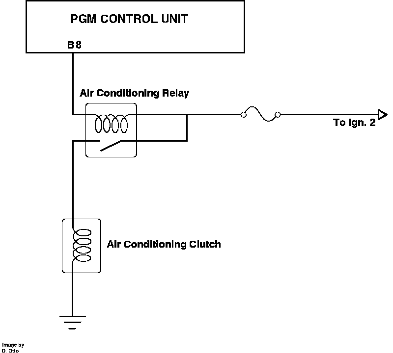

Compressor Clutch Relay: Description and Operation
A/C Clutch Relay Control:

The a/c compressor clutch relay is located near the right front corner of the engine compartment. Power is applied to the relay from ignition switch terminal Ign. 2 and is hot whenever the switch is turned ON. The ground is supplied by ECU pin B8. When the relay is grounded it allows power to the air conditioning clutch, engaging the compressor.